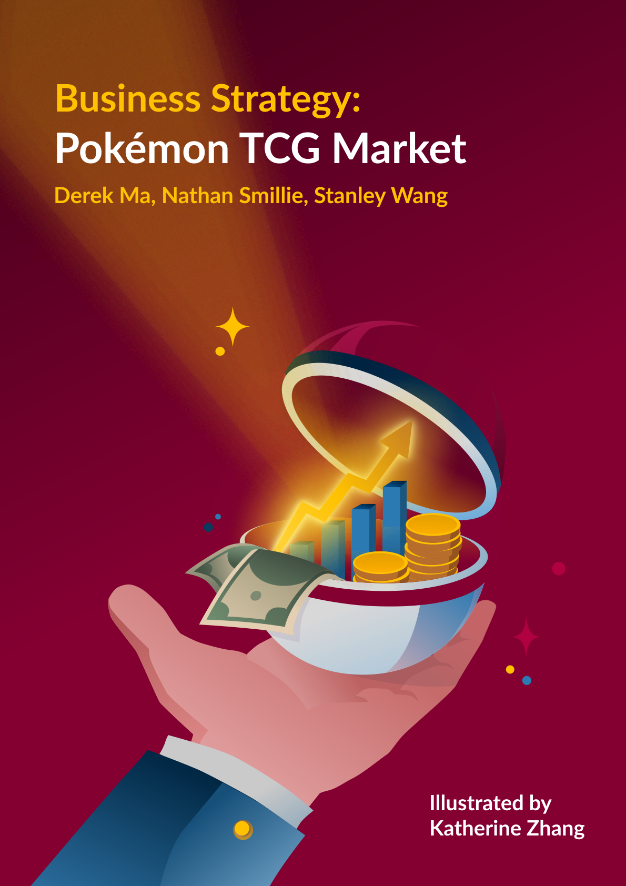
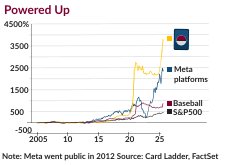

By Derek Ma, Nathan Smillie, Stanley Wang | Illustrated by Katherine Zhang | Winter 2026 Issue | Business Strategy

Many people remember Pokémon cards, first launched in Japan in October 1996, from their childhoods, whether they collected them casually or played the trading card game competitively. Over time, the cards became extremely profitable, with the original Base Set print run estimated in the tens of millions, although exact figures were never officially disclosed. The brand also achieved major success across other media, including the animated television series, which debuted in Japan in April 1997, and the release of the Pokémon Red and Blue video games in North America in 1998. These products helped drive card sales and establish Pokémon as a global entertainment franchise. Pokémon’s rapid rise occurred alongside other popular trading card games such as Magic: The Gathering and Yu-Gi-Oh!, while unconventional investments and collectibles have also gained popularity through pop culture and social media influencers. Through this growth, Pokémon developed a three-pillar media ecosystem built around video games, anime, and trading cards. By 1999, the franchise was generating approximately $1 billion annually in merchandise sales, according to various retail reports. That same year, demand became so widespread that many retailers struggled to keep cards in stock, creating what some described as the first "Pokémon panic” supply shortage. As of 2022, The Pokémon Company reported that approximately 43.2 billion Pokémon cards had been printed globally. In recent years, however, interest has expanded beyond simple nostalgia and gameplay. Increasingly, collectors and investors view rare Pokémon cards as alternative assets capable of preserving wealth and generating returns. Why would investors choose high-value trading cards over traditional assets such as equities or fixed-income securities? This article examines Pokémon cards from an investment perspective, including their diversification potential, long-term growth prospects, sources of demand, and historical price fluctuations. Ultimately, it seeks to answer one central question: what makes Pokémon cards so attractive as both high-value collectibles and investments?
The Investment Case for Pokémon Cards
Throughout the years, an increasing number of Pokémon fans have begun using these cards as investments. According to the Pokémon Card Market Index, trading cards have generated a cumulative return of approximately 3,821% since 2004, compared with roughly 483% for a traditional benchmark such as the S&P 500 over the same period. However, no standardized pricing index exists for Pokémon cards, meaning there is no equivalent to Bloomberg or Morningstar for the market. Additionally, the circulating supply of individual cards remains relatively unknown, as The Pokémon Company does not disclose print-run data by specific card.

Primary secondary-market venues include eBay, TCGPlayer, Cardmarket (Europe), PWCC Marketplace, Goldin, and Heritage Auctions. eBay also reported Pokémon cards as one of its top-selling collectible categories during 2020–2021. The market experienced its peak boom period between 2020 and 2021, when some individual cards appreciated by 150% to 350% in a single year. This was followed by a post-peak correction from 2022 to 2024, when many cards declined by 10% to 20%. Vintage cards from the Wizards of the Coast era experienced a more modest and delayed decline, leading many collectors to treat them as relative safe-haven assets. Pokémon cards can generally be organized into five distinct investment categories: Vintage Holos, Trophy or Ultra-Rarity Cards, Modern Chase Cards (2019–present), Graded Modern Slabs, and Sealed Product. Vintage Holos are primarily driven by nostalgia and finite, non-reprinted supply. They are highly condition-sensitive, as even minor scratches can reduce a PSA 10 grade to a PSA 7 and significantly lower value. However, they often experience lower short-term volatility than modern cards, making them closer to a fine-art asset class.
Trophy cards, awarded only at official tournaments, derive value from institutionally controlled scarcity. They trade infrequently, making them highly illiquid, but buyers are often high-net-worth collectors, creating inelastic demand. Modern Chase Cards are typically the most volatile segment. Newly released chase cards can rise 200% to 400% shortly after release before falling sharply once reprints are announced. Their demand is often driven by illustration quality, popular Pokémon characters, and social media amplification. Graded Modern Slabs are influenced by population reports, PSA submission waves, and grading backlog cycles. In some cases, modern slab prices have fallen following grading-related controversies. Finally, sealed products such as booster boxes, packs, and Elite Trainer Boxes have a unique supply mechanic: every time a product is opened, total supply permanently decreases. Unlike stocks or commodities, opened sealed product is destroyed. Vintage sealed products have historically shown steady long-term appreciation with lower volatility than many individual cards, while so-called "pack gambling" psychology continues to drive demand from both collectors and casual buyers. From a short-term market outlook, some evidence suggests speculative bubble conditions, particularly during 2020–2021 when prices rose at unsustainable rates. Comparisons have been made to past speculative eras such as the dot-com bubble. However, increased production capacity and recent corrections may create healthier long-term market conditions and buying opportunities. Meanwhile, vintage cards continue to benefit from their safe-haven status, stronger scarcity dynamics, and higher barriers to entry than modern cards.
Sources of Demand and Utility in the Pokémon Card Market
Demand for these cards stems from collectibility and rarity. We will start by examining the various rarity tiers. Firstly, Common, Uncommon, and Rare have been the base tiers since 1996. Holographic Rare cards feature foil treatment on the artwork and have lower pull rates. The 1st Edition stamp appeared only on initial print runs, and because Pokémon does not reprint cards in these editions, they remain finite. Shadowless variants were a transitional print between 1st Edition and Unlimited runs and are often overlooked by casual collectors. Factory misprints, such as "Jungle No Symbol" error cards, create unintentional scarcity and often command high collector premiums. Modern rarity tiers include Ultra Rare, Secret Rare, Alternate Art, Special Illustration Rare (SIR), and Hyper Rare. SIR cards, introduced around 2022 in Japanese sets, have estimated pull rates of roughly 1 in 180+ packs.
There are several ways to grade cards of different rarities. PSA (Professional Sports Authenticator) is the dominant grader, using a 1–10 scale. Beckett (BGS) uses subgrades for centering, corners, edges, and surface, with a 9.5 "Black Label" being highly coveted. CGC is a newer entrant that gained market share following the PSA backlog crisis of 2021. SGC is a smaller player but has built a growing reputation for vintage cards. Focusing on the PSA system, there is a major price variance between grades. A PSA 9 1st Edition Charizard is worth significantly less than a PSA 10 equivalent, with PSA 10 copies often selling for over 1,775% more. Grading fee tiers range from approximately $25 for economy or bulk submissions to $10,000+ for super express on high-value cards. During 2021, PSA’s grading backlog exceeded 10 million cards, causing turnaround times to stretch to 12–18 months. PSA also suspended new economy submissions in April 2021 due to overwhelming demand.
Record sales further demonstrate the impact of grading. Logan Paul’s 2022 purchase of a PSA 10 1st Edition Base Set Charizard at PWCC auction sold for $420,000. A PSA 10 Pikachu Illustrator sold for $5,275,000 to Logan Paul in 2021 and is often considered the rarest card in existence, with only around 30 known copies.
Looking at the core psychological drivers of card purchases, demand is influenced by nostalgia, completionism, social status signaling, investment motives, and gambling-adjacent pack-opening behaviour. Nostalgia research suggests that adults aged 25–40 represent the primary buyer demographic, having grown up with cards from the 1996–2004 era. Completionist behaviour, such as building a full 151-card Base Set collection, drives demand even for common cards in high grades. FOMO is encouraged through limited print windows and exclusive releases. Loss aversion also plays a role, as collectors who sold too early during the 2020 boom often re-entered the market at higher prices. Pack opening functions similarly to gambling through a variable reward schedule linked to dopamine responses, a pattern documented in loot box and TCG research.
Finally, graded slabs displayed in cases, on streams, or at events serve as visible status symbols among collectors. The “one that got away” effect also drives adults to repurchase childhood cards they once owned, often at prices far above what they originally paid.
Market Dynamics, Acceleration, and Outlook
From Pokémon GO (2016) to Detective Pikachu (2019), the franchise experienced rapid growth in mainstream media and online culture. Public figures such as Logan Paul, Post Malone, Ed Sheeran, and Gary Vaynerchuk helped fuel renewed interest, with Vaynerchuk publicly describing Pokémon cards as an investment vehicle in 2020. Livestream "breaks," where creators open packs in bulk, also increased demand for sealed products. Intergenerational buying has further expanded the market, as parents often purchase cards alongside their children, thereby expanding the total addressable market. This helps explain why Pokémon has outperformed Yu-Gi-Oh! in the TCG market. Yu-Gi-Oh! values are more closely tied to competitive viability, meaning cards can lose value when they fall out of the meta.
In contrast, Pokémon card demand exists largely independent of gameplay and is driven by collectors. Pokémon also benefits from stronger global brand recognition, while Yu-Gi-Oh! remains more niche. In addition, Konami has historically reprinted valuable cards more aggressively, limiting long-term scarcity. The COVID-19 pandemic accelerated Pokémon’s boom in 2020–2021. Stimulus payments, lockdown boredom, and nostalgia created a surge in spending. Pack openings on TikTok and YouTube exploded, while retailers such as Target, Walmart, and GameStop frequently sold out of products within hours. Some cards appreciated 150–350% within a single year. A correction followed from 2022–2024, with many modern cards falling 10–20% from peak levels and some dropping 30–50%. Vintage cards generally performed better, with smaller declines or stable pricing. Looking ahead, expanded print capacity may reduce modern-card scarcity, making vintage cards relatively stronger long term. New game generations continue to bring in younger fans who may become future nostalgic buyers. Risks include overprinting, reduced trust in grading companies, shifting generational interests, and possible future regulation. However, bullish factors remain: high-grade vintage supply is extremely limited, Pokémon has shown lasting cultural relevance since 1996, and interest from serious collectors continues to grow.
Conclusion
Pokémon cards have evolved far beyond what many people remember from childhood. They now occupy a genuinely unique position within the world of investment opportunities. Unlike conventional assets, they sit at the intersection of nostalgia, collectibility, cultural significance, and scarcity. This combination has, over the past several decades, produced returns that have significantly outpaced many traditional equity benchmarks. With that said, the market is not simple. The 2020–2021 boom demonstrated how quickly sentiment-driven price appreciation can reverse, and the subsequent correction reminded collectors and investors alike that these cards carry liquidity, valuation, and counterparty risks that equities often do not. Similarly, there is no single central exchange that efficiently connects buyers and sellers across the globe. However, the long-term structural case remains compelling. Vintage cards benefit from finite supply, non-reprintability, emotional connections with collectors, and a level of cultural significance that most collectible categories never achieve. The franchise has successfully navigated generational transitions, from the Base Set craze of the late 1990s to the Pokémon GO revival and the pandemic-era boom, emerging from each cycle with a larger fanbase and broader audience than before. For investors willing to learn and navigate the market’s opacity and condition sensitivity, rare Pokémon cards may offer something increasingly difficult to find in traditional portfolios: an asset class with growing institutional recognition and demand that continues to renew itself as each new generation discovers the franchise for the first time. Whether as a store of value, a diversification tool, or simply a passion investment, Pokémon cards have earned a legitimate place in the conversation regarding alternative assets. This opportunity also depends on the continued success of the three companies that jointly control the franchise: Nintendo, Game Freak, and Creatures Inc. If Pokémon can continue producing successful games, media, and products with the same consistency it has shown for decades, it may remain an asset class that, much like Pokémon itself, shows few signs of fading.